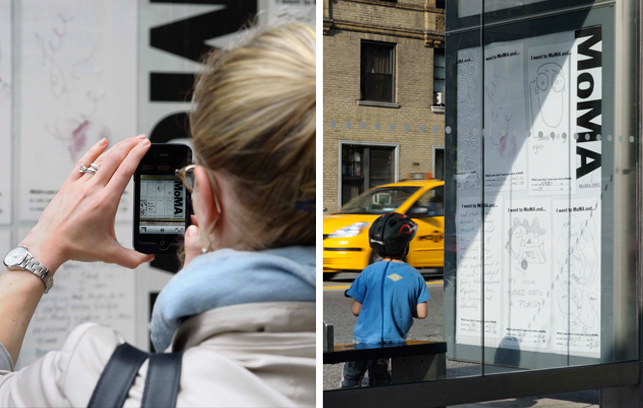

Website: MoMA.org/IWent
I went to MoMA and...
What began as an impromptu experiment to see what would happen if MoMA visitors were given an opportunity to share their experiences at the Museum — whatever those might be — has now been given new life. The amazing range of beautiful, clever, and heartfelt hand-written — and hand-drawn — responses that once graced the walls of the Museum lobby in pencil and paper have returned in an ever-growing stream of responses based on a collaboration between the MoMA and POKE New York.
Getting it onto the museum walls:
Together we developed a new digital and social platform to make it easier for MoMA visitors to share their stories about their visit to the museum and to discover other people's stories. To submit their cards, visitors input their card into one of two custom-built scanning stations (one in the Lobby and another in Cafe 2). At the push of a button, their card is scanned and returned seconds later and then put into a queue where the card is projected onto MoMA's walls alongside all of the other submissions.
Sharing your MoMA story:
Using the unique URL printed on their card, visitors can easily find their story on moma.org/iwent where they can also claim it, tag it, and then share it via Twitter, Facebook, or embed. Their card is also added to the virtual wall, which visitors can browse the entire collection of experiences or search for cards by keyword.
A foundation for sharing:
Not only do each of these experiences provide an opportunity for sharing on an individual level, but they also provide the MoMA with a foundation for an ongoing, evergreen marketing campaign that highlights the personal discovery a visit to the museum can foster. "I Went" cards have been used in national advertising campaigns for the museum and have made quite a splash in the digital space.
Capturing individual experiences also provide the museum with key data and insights about their visitors. Cards can be tagged by mood, exhibit, and sentiment and then compared based on their timestamp to the local weather, current events, etc. to gain unprecedented insight into the impact the MoMA has on its visitors.
